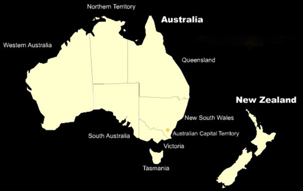

|
|
|  | - 前言
- 第零章 下定決心，踏上旅途 - 第一章 迷失於悉尼，那個無知的我 - 第二章 我在果園愛拼的日子 - 第三章 在墨爾本，我找到了軟弱 - 第四章 我的夢，從阿得萊德開始 - 第五章 闖進紅土沙漠，在世界中心呼喚愛 - 第六章 來到達爾文，孤獨就是我的考驗 - 第七章 難忘柏斯，我的第二個家 - 第八章 追逐陽光，玩盡澳洲東岸 - 第九章 從北到南，走遍美麗的紐西蘭 - 第十章 重返悉尼，炎夏的聖誕 - 第十一章 遊覽坎培拉，有趣的體驗 - 第十二章 迎接新的一年，簡單的日子就快樂 - 第十三章 旅程終點站，塔斯曼尼亞 - 第十四章 歸途上的小插曲，在南韓重會好友 - 後話 - 二十年後感 二十年後的回顧與感想 |
 |
|
| By Auch 2007-2026 | |